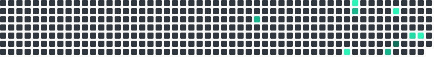

GET IN TOUCH
Let's build something secure.
Open to internships, software engineering opportunities, and cybersecurity projects.


Computer Science undergraduate with a strong foundation in programming, data structures, algorithms, and operating systems. Hands-on experience with Linux environments, cybersecurity fundamentals, and system-level analysis.
I'm a Computer Science undergraduate with a strong foundation in programming, data structures, algorithms, and operating systems. Hands-on experience with Linux environments, cybersecurity fundamentals, and system-level analysis. Proficient in C, C++, Java, and Python with a focus on problem-solving, secure software development, and core computer science principles.
B.Tech, Computer Science and Engineering (2024 – 2028)
Senior Secondary (PCMC) (2021 – 2022)
Data structures, algorithms, secure software development, Linux security, system-level analysis
A working stack spanning programming languages, cybersecurity, systems, and developer tools.
Selected work spanning cybersecurity simulations, systems practice, and software development.
Simulated security assessments involving threat modeling, vulnerability identification, and risk analysis for Deloitte and Tata Group.
Hands-on administration and security practice with Linux file systems, permissions, access control, and system hardening in Kali Linux.
Software projects in C, C++, and Java emphasizing algorithmic problem solving, memory management, and OOP principles alongside HTML/CSS web layout.
Contribution activity, pinned work, and language footprint.

Completed higher secondary studies with Physics, Chemistry, Math & Computers at D.C. Lewis Memorial School.
Began Computer Science and Engineering undergraduate degree at Quantum Global Campus.
Gained hands-on experience in Linux environments, system hardening, file permissions, and security fundamentals.
Completed Deloitte Australia & Tata Group cybersecurity analyst job simulations and earned certifications.
Aiming to build secure software, tackle complex systems, and solve real-world engineering problems.
4+ Completed
Linux & Security
Practical Simulations
Varanasi, UP, India
C • C++ • Java • Python
Open to internships, software engineering opportunities, and cybersecurity projects.